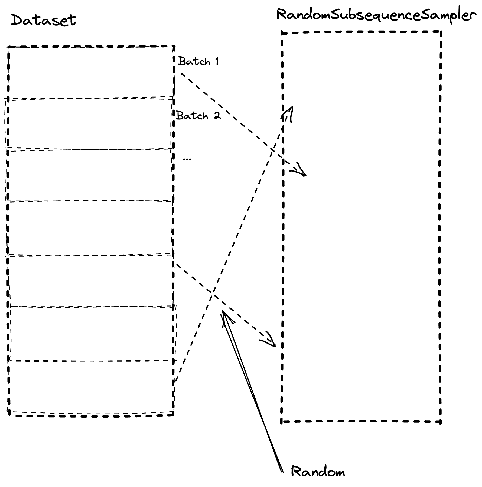

Today Best Practices are commonly presented as the One True Solution™ without considering the context(s) in which the practice is to be applied. I believe that with todays frameworks & methodologies it’s getting more and more common that people start following a kind of “hive-mind”, and who’s the driver? Usually the ones selling it…
Of course there’s multiple other angles such as:
- “No on ever got fired by buying IBM” (or following MANGA best practices)
- Career Climbing
- Who wouldn’t want to make their CV more interesting by applying a well-known technique or framework? Even if it doesn’t make sense for the application.
Anyhow, this is the story of how we/I got caught in a best practice which actually didn’t apply in my context. Ironically giving a new advice! 😅 Who knows, perhaps it’ll end up being a trap in the future.. 🤔
Background
We started a project where we had a lot of data, not Big Data, but a decent chunk of > 100 GB.
Being active in the industry and following the latest trends I knew that streaming data rather than loading it all makes a lot of sense and is recommended in multiple libraries such as HuggingFace Datasets.
Further I knew that there’s certain file formats which works exceptionally when streaming, or mmap, to do a very cheap data load and usage.
mmap
Memory-mapping (mmap) is a solution to stream data into memory from disk, and back. This enables us to:
- Transform a bigger-than-memory dataset and write to disk again.
- Train on a bigger-than-memory dataset by streaming it into memory
Using mmap combined with a good file format such as Apache Arrow is praised around by companies and libraries.
Apache Arrow is a column-based file format which is saved in a deserialized format, i.e. it is the same as it is in-memory.
This results in incredibly efficient mmap where we can stream data into memory without deserialize/serialize! Further by being a OLAP (column-based) format you can slice the columns you use and not stream anything else. Exceptional!
I’ve first-hand experience of the gains of using OLAP-based file formats such as parquet which additionally supply column-compression which is very efficient in analytics. How many rows contain the same date repeated? Now it’s cheap! 😉
Based on my history of using mmap algorithmically (low-level) and OLAP files we ended up using 🤗 Datasets which is a library to work with datasets.
HuggingFace is a company that helps other companies deploy State-of-the-Art text and image models while providing a huge Open Source community with a lot of datasets, models and much more.
Their dataset API must be based on best practise right? What we later learned is that best practice really is contextual. This is the story.
Problem Identification
As a primer, how do you even identify this type of issue? After all it’s very easy to hide such problems by using powerful compute in the cloud.
The answer is rather simple, if the training is equal fast using a CPU (M1) as GPU you’re thouroughly under-utilizing your GPU.
There’s multiple instances where one would never notice as a lot of practicioneers tend to run directly on a cloud compute, but if you found this to be true you’d surely pause and reflect on your task, right?
Step 1: Don’t Trust Environments
Don’t make your cloud compute solve all problems from the get-go, allow yourself to gradually move into the cloud by utilizing a Local-First approach. Allowing yourself to run locally just as easily as in the cloud opens a lot of possibilities such as:
- Quick iterations by running subset-training
- Improved Circular Data Analysis
- A certain satisfaction of simplicity
I’ll write a blog on Local First-approach and all the bonuses of such workflow later.
As we started our journey to find problem(s) in our “best-practice” training pipeline we need to understand what is actually happening - introducing debuggers & profilers!
Step 2: Embrace Debuggers & Profilers
PyCharm and VS Code includes some great debuggers which allows us to step into functions and execute different logic to further understand what’s happening under the hood. Further there’s great tools to track what happens post-run which are called Profilers.
One such profiler is the PyTorch Profiler that we embraced. Using a profiler we found that we spend a lot of time inside the DataLoader - which is not a good sign! We’d like to optimize GPU usage.
We built a hypothesis, the Macbook Pro M1 has a much faster SSD and because of that it trains equally fast as the Azure VM based on bottlenecking in the DataLoader. The I/O-operations being much faster leads to equal performance even if it has slower mathematical operations.
To make sure that Azure had a fair challenge we validated the following:
- We’re not using a mounted storage but a downloaded dataset on the VM
- We’re using the correct VM
All seem correct, what else can we do to improve? 🤔
We decided to rethink our “best practice” pipeline. Where could we save time? What’s is actually the part of the DataLoader that’s slow?
Rethinking our pipeline
We found the biggest bottleneck pretty fast.
🎯 Random Access Read
Random Access is slow with high latency even on the best SSD’s, and this is why Random Access Memory (RAM) exist! It has improved substantially the last decade, but nonetheless it’s slow.
We built a system that retrieves data from columnar storage but randomly. Our batches are sequential which helps a little, but we extract our batch starting point randomly, see Figure 1. We’re solving a time series forecasting problem which also means we expand one data point into a window of the last X points to predict future Y points. This isn’t cheap either, to roll over data like this.
To keep a batch internally intact is very important for some models such as the Recurrent Neural Networks (RNN) that keeps an internal state being reset each batch.

This means that by keeping more data in-memory (RAM) we can reduce our latency and bottleneck! Especially on VM’s with slower SSD’s such as Azure.🦸♂️
With this realization decided to optimize our pipeline by sidestepping best-practice and building a simple but custom batch-operation.
Optimizing Preprocessing
As we applied one optimization after another it built into this beautiful onion where we by each layer we removed we had new opportunities based on the new base.
- Preprocess by batch rather than streaming data (by batch)
- One batch being one file
This sped up our preprocessing enough that we don’t need to cache it and thereby no need to do it on all data. This means that we could apply our second optimization.
- Preprocess by a sliced batch, i.e. only columns used
This sped up our pipeline and substantially reduced memory requirements leading us to our third and final optimization in pre-processing.
- Scale the scalers on a sample of the data.
All in all we had huge speedups in our preprocessing, as follows:
- ~ 10x faster
- ~ 10x faster
- ~ 2x faster
All in all our pipeline went from ~20 minutes to seconds!
Optimizing Training Loop
With preprocessing completing in seconds rather than minutes we could move ahead to improve our training loop.
Based on our learnings from the preprocessing iterations we knew that we could essentially load all data into memory if we sliced it, which we usually did, resulting in only using 1/8th or 1/16th of the dataset. Additionally we learned that we could get cloud compute with 2-300 GB RAM at Azure.
Using this knowledge we applied the following optimization:
- Load sliced data into RAM on-demand rather than reading by streaming it into memory
Applying this change we saw huge efficiency gains but we still spent a lot of time in the DataLoader, why? We found that on each batch load we converted our data into a torch.tensor which should be pretty fast, but it still end up being a bottleneck. Next optimization became clear, why not keep it as a tensor from the get-go?
- Load data into RAM as a dictionary
{"column": torch.tensor()}with each column being key
Thus we achieved a really efficient (Deep Learning) pipeline, training being cut from hours to minutes! 🤯
What we learned
- Best practices are contextual.
- Custom “dumb” code could end up much more efficient.
- Start Simple.
- Simpler is often better (apply KISS).
- Custom code is not always more complex than libraries because they hide complexity.
- Balance complexity and efficiency delicately.
By batching data smarter and keeping a lot of it as tensors in-memory we had an incredible amount of gains.
It’s simple, stupid and wonderful.
~Hampus Londögård